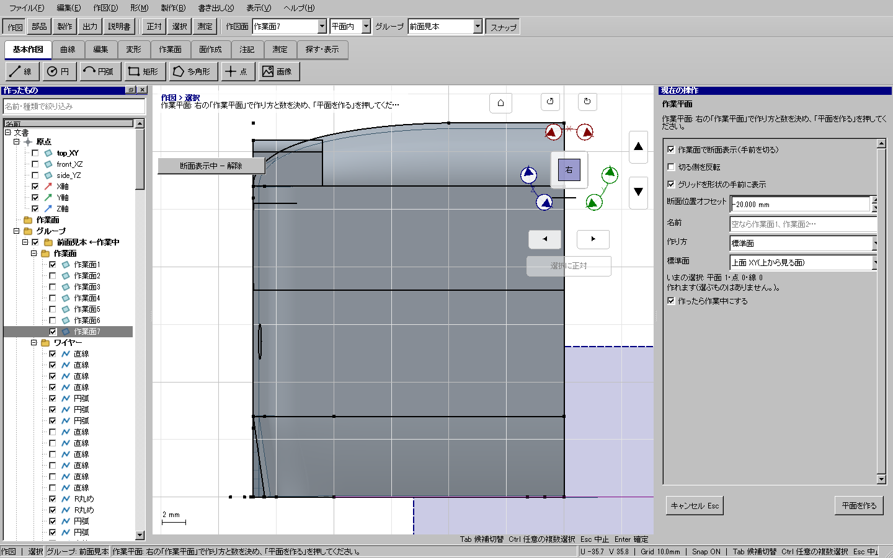

2026-10-17。前回の修正後に報告されたDelete無反応の追加調査と、確認付き連鎖削除・断面表示・元面に依存しない厚み付け。
| 問題・要望 | 調査結果 | 対応 |
|---|---|---|
| 線分を選んでDeleteしても何も出ない | 作図中のカーソル入力欄がDeleteのShortcutOverrideを無条件で受け取り、入力欄の消去として消費していた。前回の試験はRunCommand直呼びで、この入口を検証していなかった。 | 未編集の入力欄と通常選択がある場合はDeleteを選択要素の削除へ渡す。Qtキーイベントからの試験を追加。選択のない数値入力中の消去は維持。 |
| 「使っているものがある」ときも削除したい | コアに連鎖削除が存在したがUIの確認がなかった。 | 文書のコピーで正確な削除後状態を準備。参照先・寸法を含む一覧と3D赤色表示を出し、確認後に単一コマンドで反映。取消は文書・表示状態を維持。Undo／Redo・保存にも対応。 |
| 作業面のグリッドが面に隠れる | 面の塗りがグリッドより後で、断面表示も未実装だった。 | グリッドの前面表示と、作業面を基準にした表示専用半空間切断・反転・オフセット・解除。三角形は交点で分割し、CPU／GPUと面ピックで同じ網を使用。元ワイヤーは参照として保持。 |
| 厚み部品を元の面に依存させたくない | 従来の厚み部品は元面と終端を入力にしていた。 | 生成対象の下へ独立生成の選択を追加。既存の固定BRep形式で形状を保存し、元面・終端への入力参照を持たない。プレビューで計算した形を引き継ぎ、再計算を増やさない。既定の追従生成と境界ワイヤー出力を維持。 |
ユーザー提供の115面.kcd2を読み取り、作業面7を使用。作業面7自体は形状外にあるため、オフセット0では一方の切断側が元表示と同じになる。表示用オフセットを断面の中間まで移動して試験し、表示三角形数134,919 → 55,965を確認。解除で134,919へ復元し、文書revision不変。元ファイルへの保存は行っていない。

断面時の元ソリッド稜線が不可視部分で拾われないよう、面の選択は切断済み網へ統一。ソリッド・面の元稜線は断面中の辺選択・スナップ対象から除外し、編集ワイヤーは保持。切断縁は表示専用で、モデルや型紙の正本へ混入しない。
重点UI試験17件成功。実キー、直線・円弧・複数辺、参照先と寸法、非表示状態の取消、Undo／Redo、独立厚みの元面削除・保存、全出力・厚み配置、実モデル断面を確認。短い整合検査9件成功。全体検証はCTest 194/194、開発版と配布版のUI各506/506、旧版自己試験が成功。CTest実時間1126.07秒、配布版548.45秒、開発版UI528.93秒。検証済み配布物をout/releases/delete-section-full2-20261017へ配置した。
短い検査で、新規画面コードのQtヘッダーと、肥大化したコンストラクター、説明書の画像登録の不足を検出して修正。必要な試験・許容精度は変更していない。
最初の全体検証は配布版UI試験が900秒で時間切れになり、不合格とした。描画計測で、前面グリッドが前段の塗りブラシを引き継ぎ、1フレーム約2.4秒かかる場合を確認。グリッドを1回だけ描き、save/restoreとNoBrushを指定して状態を分離した。同一環境・offscreen・HP-TH-JIG-OUTPUTの比較は、修正前21.69秒、従来配布版12.11秒、修正後10.11秒（各1回）。全体の短縮率を示す数値ではない。試験ごとの完了記録もprogress.jsonlに保存し、最終結果と区別する。
削除処理をV2ViewCommands.cppからV2DeleteCommands.cppへ分離。断面と削除対象の一時表示はV2SectionView.cpp、確認操作の試験補助はV2SelfTestDeleteDialog.hへ配置。元ファイル自体の削除・ユーザー成果物の削除・依存ライブラリ追加はない。旧版の配布物も上書きしない。